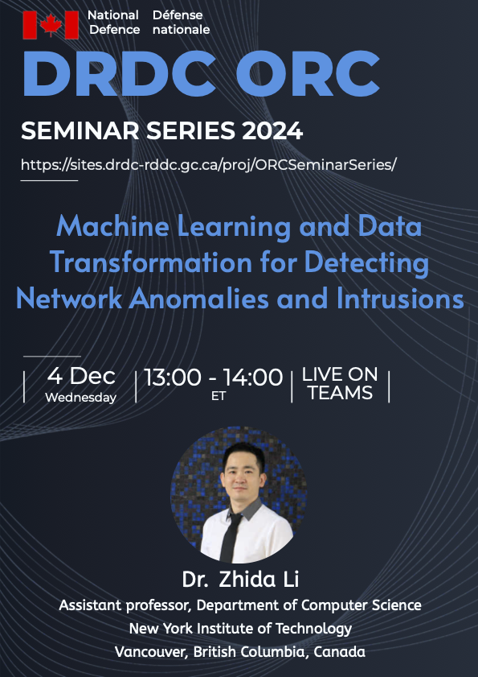
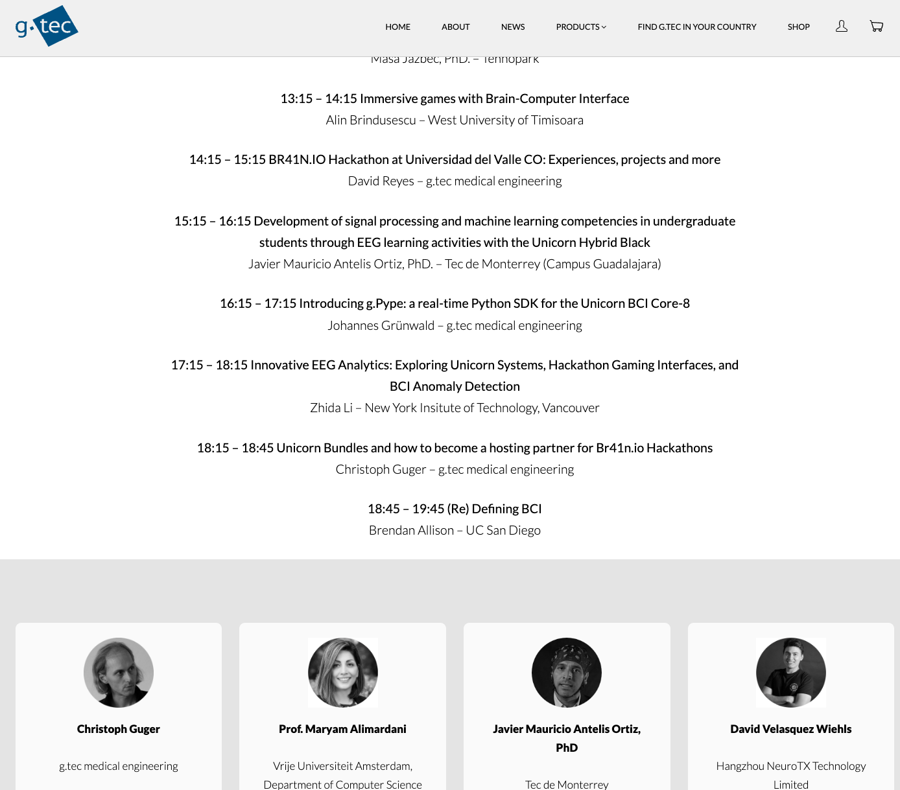

Zhida Li received the B.E. and M.Eng.Sc. degrees in electrical engineering and microelectronic design
from the University College Cork, Ireland, respectively.
He received his Ph.D. degree in engineering science from
Simon Fraser University (SFU), Canada,
under the supervision of Prof. Ljiljana Trajković.
He is currently an Assistant Professor in the Department of Computer Science
at New York Institute of Technology - Vancouver Campus, British Columbia, Canada.
From 2011 to 2014, he was a Research Assistant at Tyndall National Institute, Ireland.
He was a Postdoctoral Fellow at SFU, from June 2022 to Dec. 2022.
His research interests include machine learning systems for detecting network anomalies, brain-computer interfaces, and blockchain.
Dr. Li serves as Secretary (2022-present) of the Membership Development Committee, IEEE Canada.
He is the Secretary (2024–Present) of IEEE Vancouver Section,
the Chair (2023-present) of the IEEE Circuits and Systems Society joint Chapter of the Vancouver/Victoria Sections,
and the Counselor and Co-Founder (2023–Present) of New York Tech-Vancouver Student Branch.
He serves as Lead Guest Editor for MDPI Electronics.
He served as a Posters Co-Chair and a Track Chair for IEEE Canadian Conference on Electrical and Computer Engineering (CCECE) 2025.
He serves as a Technical Program Committee (TPC) Member for various conferences, including IEEE International Conference on Cryptography, Security, and Privacy (CSP) 2024 and 2025, and the International Conference on Geoinformation Science and Communication Technology (GSCT) 2025. He was a TPC member of the IEEE International Symposium on Parallel and Distributed Processing with Applications (ISPA) 2024, the International Conference on E-Business and Internet (ICEBI) 2023, the IEEE International Conference on High Performance Computing and Communications (HPCC) 2020
and a Session Chair at IEEE International Conference on Cyber, Physical, and Social Computing (CPSCom) 2020.
He served as a Publicity Chair and a TPC member of the CPSCom 2022.
He is a Member of the IEEE.
Spring, Summer, Fall 2025
- 🚀 CSCI 651 - Algorithm Concepts (core),
INCS 615 - Advanced Network and Internet Security (core),
INCS 775 - Data Center Security (core),
INCS 870 - Project I (core),
CSCI 503 - Computer Organization and Architecture (Prerequisite)
Spring, Summer, Fall 2024
Spring, Summer, Fall 2023
- 🛫 CSCI 651 - Algorithm Concepts (core),
INCS 615 - Advanced Network and Internet Security (core),
INCS 870 - Project I (core),
CSCI 690 - Computer Networks (elective)
- Applications of Machine Learning Techniques for Classifying Network Anomalies
- Processed the raw network data: Border Gateway Protocol (BGP) data from RIPE and Route Views
- Analyzed and implemented various machine learning algorithms as well as employing feature selection
- Performed experiments using a supercomputer managed by Compute Canada
- Development of Novel Machine Learning Algorithms: VFBLS and VCFBLS
- Developed two fast BLS-based algorithms: variable features BLS algorithms without (VFBLS) and with
cascades (VCFBLS)
- Developed generalized models based on various subsets of input data based on selected features and
expanded the network structure
- Development of Tool for Detecting Network Anomalies:
BGPGuard
- Developed BGPGuard tool that consists of multiple modules: real-time data retrieval, feature
extraction, label refinement, data partition, data processing, ML algorithms, parameter selection,
ML models, and classification
- Developed a web-based version for real-time anomaly detection and off-line classification
- Brain-Computer Interface:
- Analyze electroencephalogram (EEG) benchmarks
- Develop new algorithms and approaches to analyze data from non-invasive collection of brain signals
- Blockchain:
- Ethereum phishing detection: based on transaction records and labels collected from Etherscan
- Develop graph neural networks to identify suspicious Ethereum accounts
2025
Hongbo Du and Z. Li,
"GEE: Graphormer-enhanced encoder model for anomaly detection in weighted signed networks,"
IEEE Int. Conf. Syst., Man, Cybern., Vienna, Austria, Oct. 2025, to be presented.
Z. Alomari, H. Sadineni, M. B. Taha, and Z. Li,
"Hybrid ensemble learning framework for real-time DDoS detection and mitigation in SDN environments,"
IEEE Int. Conf. Artificial Intelligence, Blockchain, and Internet of Things (AIBThings), Mount Pleasant, MI, USA, Sept. 2025, to be published.
X. Yang, Z. Li, Y. Shao, Z. Alomari, and A. Makanju, "Enhancing border gateway protocol security: comparing traditional, deep, and fast machine learning models,"
in Proc. IEEE Canadian Conf. Elect. Comput. Eng. (CCECE),
Vancouver, BC, Canada, May 2025.
F. Wang, Q. Weng, M. Zhang, Y. Shao, Z. Alomari, A. Makanju, and Z. Li,
"LlamaIDS: real-time detection model of zero-day intrusions using large language models,"
in Proc. IEEE Canadian Conf. Elect. Comput. Eng. (CCECE),
Vancouver, BC, Canada, May 2025.
H. Chen, Z. Li, Y. Shao, and A. Makanju,
"Advanced feature engineering for Twitter bot detection: utilizing metadata, NLP, and transformers,"
in Proc. IEEE Canadian Conf. Elect. Comput. Eng. (CCECE),
Vancouver, BC, Canada, May 2025.
G. Zhu, W. Dai, X. Guo, C. Wang, Y. Shao, A. Makanju, and Z. Li,
"NetVisionary: an automated and scalable Suricata-based IDS platform,"
in Proc. IEEE Canadian Conf. Elect. Comput. Eng. (CCECE),
Vancouver, BC, Canada, May 2025.
Z. Li, C. Zhu, C. Chu, C. He, Y. Shao, Z. Alomari, and A. Makanju,
"Optimizing real-time network intrusion detection using a refined data filtering method,"
in Proc. IEEE Int. Conf. Cryptography, Security, and Privacy (CSP),
Okinawa, Japan, Apr. 2025.
H. Xie, Y. Shao, Z. Li, Z. Alomari, and A. Makanju,
"Optimization of class imbalance techniques in machine learning models for network intrusion detection,"
in Proc. IEEE Int. Conf. Cryptography, Security, and Privacy (CSP),
Okinawa, Japan, Apr. 2025.
S. Dang, Y. Shao, Z. Li, A. Makanju, and T. A. Gulliver,
"SAluMC: thwarting side-channel attacks via random number injection in RISC-V,"
Entropy, vol. 27, no. 2, pp. 1-15, Feb. 2025.
2024
Z. Alomari, Z. Li, A. Makanju,
"Lightweight machine learning-based IDS for IoT environments,"
in Proc. IEEE Cyber Security in Networking Conference (CSNet),
Paris, France, Dec. 2024, pp. 33-37.
D. M. Pham, Y. Shao, Z. Li, A. Makanju, and Z. Alomari,
"Network intrusion detection with CNNs: a comparative study of deep learning and machine learning models,"
in Proc. IEEE Int. Conf. Comput Vision and Intell. Technol. (ICCVIT),
Huaibei, China, Nov. 2024, pp. 1–6.
Z. Li, W. Han, Y. Shao, and A. Makanju,
"Enhancing cybersecurity through fast machine learning algorithms,"
in Proc. IEEE Canadian Conf. Elect. Comput. Eng. (CCECE),
Kingston, ON, Canada, Aug. 2024, pp. 905-909.
Wong. W, Z. Alomari, H. Lai, Z. Li, and A. Ullah,
"An analysis of non‑elliptic curve based primality tests,"
in Proc. IEEE Int. Conf. Cryptography, Security, and Privacy (CSP),
Osaka, Japan, Apr. 2024, pp. 53-58.
2023
Z. Li and Lj. Trajković,
"Enhancing Cyber Defense: Using Machine Learning Algorithms for Detection of Network Anomalies,"
in Proc. IEEE Int. Conf. Syst., Man, Cybern.,
Honolulu, USA, Oct. 2023, pp. 1658-1663.
T. Sharma, K. Patni, Z. Li, and Lj. Trajković,
"Deep Echo State Networks for Detecting Internet Worm and Ransomware Attacks,"
in Proc. IEEE Int. Symp. Circuits Syst.,
Monterey, USA, May 2023, pp. 1-5.
Z. Li, A. L. G. Rios, and Lj. Trajković,
"Machine learning for detecting the WestRock ransomware attack using BGP routing records,"
IEEE Communications Magazine,
vol. 61, no. 3, pp. 20-26, Mar. 2023. (IF: 8.2)
2021
Z. Li, A. L. G. Rios, and Lj. Trajković,
"Classifying denial of service attacks using fast machine learning algorithms,"
in Proc. IEEE Int. Conf. Syst., Man, Cybern.,
Melbourne, Australia, Oct. 2021, pp. 1221-1226 (virtual).
Z. Li, A. L. G. Rios, and Lj. Trajković,
"Machine learning for detecting anomalies and intrusions in communication networks,"
IEEE Journal on Selected Areas in Communications (JSAC),
vol. 39, no. 7, pp. 2254-2264, July 2021. (IF: 17.2)
2020
Z. Li, A. L. G. Rios, and Lj. Trajković,
"Detecting
Internet worms, ransomware, and blackouts using recurrent neural networks,"
in Proc. IEEE Int. Conf. Syst., Man, Cybern.,
Toronto, Canada, Oct. 2020, pp. 2165-2172 (virtual).
A. L. G. Rios, Z. Li, K. Bekshentayeva, and Lj. Trajković,
"Detection of denial of service attacks in communication networks,"
in Proc. IEEE Int. Symp. Circuits Syst.,
Seville, Spain, Oct. 2020 (virtual).
2019
Z. Li, A. L. G. Rios, G. Xu, and Lj. Trajković,
"Machine learning techniques for classifying network anomalies and intrusions,"
in Proc. IEEE Int. Symp. Circuits Syst.,
Sapporo, Japan, May 2019, pp. 1-5.
A. L. G. Rios, Z. Li, G. Xu, A. D. Alonso, and Lj. Trajković,
"Detecting network anomalies and intrusions in communication networks,"
in Proc. 23rd IEEE Int. Conf. Intell. Eng. Syst.,
Godollo, Hungary, Apr. 2019, pp. 29-34.
2018
Z. Li, P. Batta, and Lj. Trajković,
"Comparison of machine learning algorithms for detection of network intrusions,"
in Proc. IEEE Int. Conf. Syst., Man, Cybern.,
Miyazaki, Japan, Oct. 2018, pp. 4248-4253.
Q. Ding, Z. Li, S. Haeri, and Lj. Trajković,
"Application of machine learning techniques to detecting anomalies in communication networks: datasets and feature selection algorithms,"
in Cyber Threat Intelligence, A. Dehghantanha, M. Conti, and T. Dargahi, Eds.,
Berlin: Springer, pp. 47-70, 2018.
Z. Li, Q. Ding, S. Haeri, and Lj. Trajković,
"Application of machine learning techniques to detecting anomalies in communication networks: classification algorithms,"
in Cyber Threat Intelligence, A. Dehghantanha, M. Conti, and T. Dargahi, Eds.,
Berlin: Springer, pp. 71-92, 2018.
P. Batta, M. Singh, Z. Li, Q. Ding, and Lj. Trajković,
"Evaluation of support vector machine kernels for detecting network anomalies,"
in Proc. IEEE Int. Symp. Circuits Syst.,
Florence, Italy, May 2018, pp. 1-4.
2017
H. B. Yedder, Q. Ding, U. Zakia, Z. Li, S. Haeri, and Lj. Trajković,
"Comparison of virtualization algorithms and topologies for data center networks,"
in Proc. 26th Int. Conf. Comput. Commun. Netw., 2nd Workshop Netw. Security. Analytics Autom.,
Vancouver, Canada, Aug. 2017.
2016
Q. Ding, Z. Li, P. Batta, and Lj. Trajković,
"Detecting BGP anomalies using machine learning techniques,"
in Proc. IEEE Int. Conf. Syst., Man, Cybern.,
Budapest, Hungary, Oct. 2016, pp. 3352-3355.
S. Haeri, Q. Ding, Z. Li, and Lj. Trajković,
"Global resource capacity algorithm with path splitting for virtual network embedding,"
in Proc. IEEE Int. Symp. Circuits Syst.,
Montreal, Canada, May 2016, pp. 666-669.
2015
M.P. Kennedy, H. Mo, Z. Li, G. Hu, P. Scognamiglio, and E. Napoli,
"The Noise and Spur Delusion in Fractional-N Frequency Synthesizer Design,"
in Proc. IEEE Int. Symp. Circuits Syst.,
Lisbon, Portugal, May 2015.
2014
Z. Li, H. Mo, and M.P. Kennedy,
"Comparative Spur Performance of a Fractional-N Frequency Synthesizer
with a Nested MASH-SQ3 Divider Controller in the Presence of Memoryless Piecewise-Linear and Polynomial Nonlinearities,"
in Proc. 25th IET Irish Signals Syst. Conf.,
Limerick, Ireland, June 2014, pp. 374–379.
M.P. Kennedy, Z. Li, and H. Mo,
"How to Eliminate Integer Boundary Spurs in Fractional-N Frequency Synthesizers,"
in Proc. RIA/URSI Research Colloquium Commun. Radio Sci. into the 21st Century,
Dublin, Ireland, May 2014, pp. 1-4.
2013
M.P. Kennedy, Z. Li, and Z. Huang,
"Programmable analog frequency divider based on p-switching,"
Nonlinear Theory and Its Applications, IEICE,
vol. 4, no. 4, pp. 389–399, Oct. 2013.
2012
Z. Li and M.P. Kennedy,
"The Switched Injection-Locked Oscillator (SILO) Concept,"
in Proc. Int. Symp. Nonlinear Theory and Its Applications (NOLTA),
Palma, Mallorca, Oct. 2012, pp. 868-871.
PDGIA 2025
Zhida Li and Yunlong Shao, "Bridging the Cybersecurity Talent Gap: AI-Driven Learning and Industry Collaboration in Private Institutions,"
Technology and AI Track, the Private Degree Granting Institutions Association (PDGIA), Vancouver, Canada, Apr. 10, 2025 (in-person).
BCI & Neurotech Masterclass 2025
Zhida Li, "Innovative EEG Analytics: Exploring Unicorn Systems, Hackathon Gaming Interfaces, and BCI Anomaly Detection,"
BCI & Neurotech Masterclass: Unicorn Brain Interface, g.tec medical engineering GmbH, Schiedlberg, Austria, Jan. 28, 2025 (virtual).
DRDC ORC Seminar Series 2024
Zhida Li, "Machine Learning and Data Transformation for Detecting Network Anomalies and Intrusions,"
DRDC ORC Seminar Series, Defence Research and Development (DRDC), DRDC Ottawa Research Centre, Canada, Dec. 4, 2022 (virtual)
UNM ME Seminar Series 2022
Zhida Li, "Machine Learning for Classifying Anomalies and Intrusions in Communication Networks,"
Mechanical Engineering Seminar Series (UNM ME Seminar Series), University of New Mexico, Albuquerque, USA, Dec. 2, 2022 (virtual).



Real-Time Network Anomaly Detection

Network Topology Analysis
×
❮
 ❯
❯
Last updated on Sun 31 Aug 2025 18:06:38 PDT.